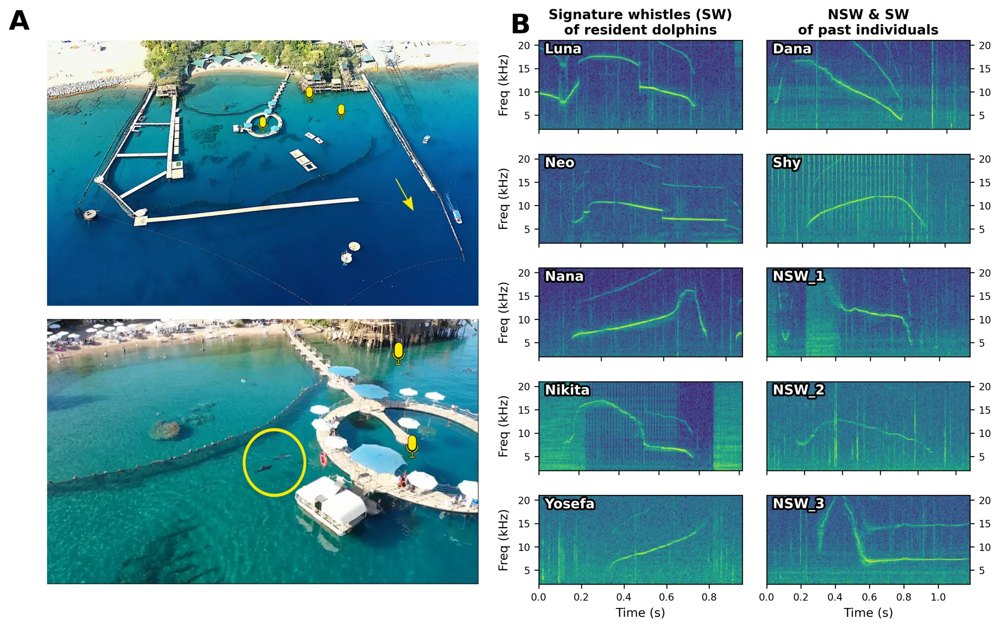
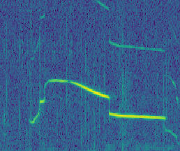
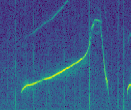
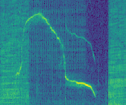
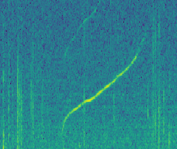
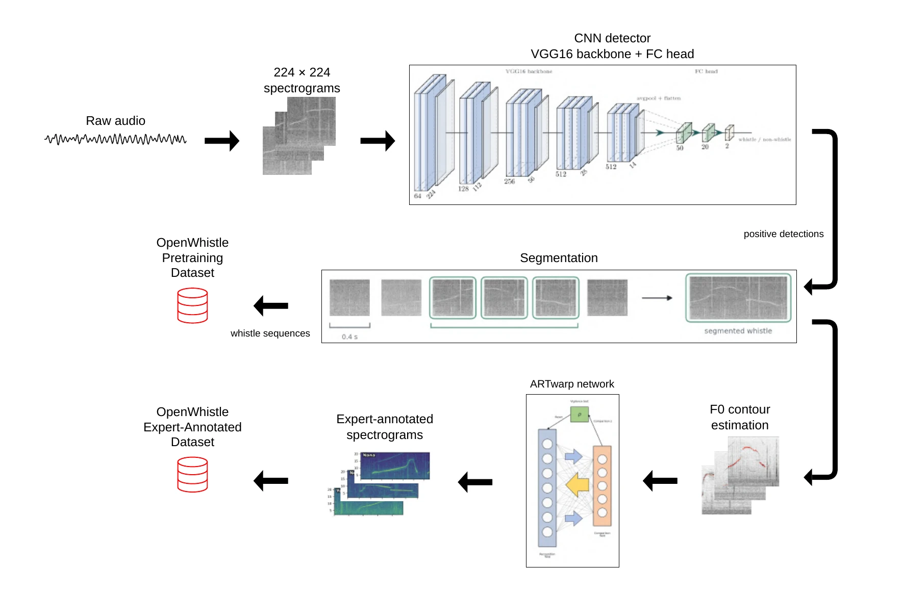

whistles
The largest publicly available dolphin-vocalization corpus to date.
A Large-Scale Longitudinal Dataset and Benchmark
of Bottlenose Dolphin Vocalizations
An open, longitudinal resource for learning the fine-grained structure of dolphin communication.
01 / THE GAP
Most animal-audio corpora cover many species with only a shallow sample of each. That is useful for species recognition, but not enough to study one communication system over time.
OpenWhistle follows a stable, known pod in a semi-natural marine environment—preserving the scale, continuity and acoustic messiness needed for new questions.
02 / THE DATASET
One species.
Unprecedented depth.
The largest publicly available dolphin-vocalization corpus to date.
Raw acoustic material suited to large-scale self-supervised pretraining.
Longitudinal recordings with contiguous sequences and changing social context.
Whistles labeled by experts within their original sequence context.

Fixed hydrophones capture natural interactions at Dolphin Reef, Eilat. The repertoire pairs individually distinctive signature-whistle types with non-signature whistles.
03 / THE REPERTOIRE
Signature whistles are learned, individually distinctive calls. Their frequency contours remain recognizable through the real-world noise, overlap and variation preserved by OpenWhistle.





04 / THE PIPELINE

05 / THE BENCHMARK
One dataset, four views of the results. Compare general audio models with OpenWhistle pretraining, data scale and end-to-end fine-tuning.
OpenWhistle performance summary
| Backbone | Balanced6 types · F1 | Natural6 types · F1 | Full set10 types · F1 | DetectionmAP |
|---|---|---|---|---|
| AVES-Coregeneral audio | 67.39 ± 2.14 | 51.00 ± 2.68 | 51.57 ± 2.34 | 57.40 ± 2.10 |
| BioLingualaudio–text | 70.98 ± 2.05 | 52.93 ± 2.11 | 54.00 ± 2.77 | 66.50 ± 2.20 |
| AVES-Bioanimal vocalizations | 75.13 ± 2.03 | 51.24 ± 2.52 | 52.69 ± 2.31 | 65.00 ± 2.30 |
| Wav2Vec2.0OpenWhistle · released checkpoint | 81.67 ± 1.80 | 59.91 ± 2.57 | 64.37 ± 2.67 | 75.76 ± 2.02 |
Classify expert-labeled whistle types with a frozen encoder, then detect whistle-bearing windows.
Best continued-pretraining result
| Checkpoint | Balanced6 types · F1 | Natural6 types · F1 | Full set10 types · F1 | DetectionmAP |
|---|---|---|---|---|
| AVES-Bio + OW10% of data | 70.40 ± 2.14 | 50.03 ± 2.66 | 47.99 ± 2.32 | 65.43 ± 2.21 |
| AVES-Bio + OW50% of data | 67.12 ± 2.16 | 50.73 ± 2.53 | 50.27 ± 2.58 | 64.14 ± 2.22 |
| AVES-Bio + OW100% of data | 70.14 ± 2.13 | 53.01 ± 2.63 | 51.54 ± 2.54 | 68.49 ± 2.08 |
| AVES-Bio + OW · BTB310% of data | 78.08 ± 1.94 | 56.05 ± 2.48 | 57.86 ± 2.79 | 69.91 ± 2.06 |
| AVES-Bio + OW · BTB350% of data | 78.11 ± 1.92 | 56.98 ± 2.52 | 58.15 ± 2.60 | 71.19 ± 1.98 |
| AVES-Bio + OW · BTB3100% of data | 80.60 ± 1.84 | 58.91 ± 2.86 | 63.53 ± 2.93 | 73.93 ± 2.13 |
Continue pretraining AVES-Bio on unlabeled OpenWhistle audio, then evaluate the adapted frozen encoder.
Data-scale summary
| Checkpoint | Balanced6 types · F1 | Natural6 types · F1 | Full set10 types · F1 | DetectionmAP |
|---|---|---|---|---|
| Wav2Vec2.0stride 960 · 10% · 40k steps | 34.78 ± 2.18 | 22.11 ± 1.37 | 22.65 ± 1.07 | 20.76 ± 1.34 |
| Wav2Vec2.0stride 960 · 50% · 200k steps | 77.66 ± 1.98 | 59.34 ± 2.99 | 56.53 ± 2.61 | 77.03 ± 2.09 |
| Wav2Vec2.0stride 960 · 100% · 400k steps | 80.83 ± 1.87 | 61.22 ± 3.04 | 60.57 ± 2.98 | 80.80 ± 1.91 |
Pretrain Wav2Vec2.0 with stride 960 from scratch on 10%, 50% and 100% of OpenWhistle, then compare frozen encoders.
Best end-to-end result
| Backbone | Balanced6 types · F1 | Natural6 types · F1 | Full set10 types · F1 | DetectionmAP |
|---|---|---|---|---|
| AVES-Coreend-to-end | 77.37 ± 0.85 | 61.24 ± 4.58 | 57.29 ± 1.73 | 74.10 ± 1.26 |
| BioLingualend-to-end | 78.99 ± 1.56 | 57.55 ± 1.46 | 54.32 ± 2.79 | 72.26 ± 0.44 |
| AVES-Bioend-to-end | 79.60 ± 0.62 | 62.06 ± 0.89 | 59.54 ± 1.05 | 77.02 ± 1.31 |
Optimize the encoder and prediction head jointly on expert-labeled OpenWhistle examples.
Higher is better. Balanced uses six equally represented whistle types; Natural keeps their observed frequencies; Full set evaluates all ten expert labels. Linear-probe uncertainty is estimated by bootstrap; fine-tuning reports variation across three seeds.
06 / WHAT COMES NEXT
Trace how a learned repertoire evolves across years and life events.
Model exchanges, turn-taking and interactions inside contiguous sequences.
Explore few-shot, active and semi-supervised learning where expert time is scarce.
Measure robustness as pod composition and acoustic conditions change.
07 / TEAM
1 Institut de Biologie de l’ENS (IBENS), Département de biologie, École normale supérieure, CNRS, INSERM, Université PSL, Paris, France · 2 Earth Species Project · 3 Not Diamond, San Francisco, USA · 4 Institut du Cerveau, Paris, France · 5 Sapienza University of Rome, Rome, Italy · 6 École Normale Supérieure, Paris, France · 7 Champalimaud Foundation, Lisbon, Portugal
CITATION
If you use OpenWhistle in your research, please cite our paper.
@article{mustun2026openwhistle,
title={OpenWhistle: A Large-Scale Longitudinal Dataset and Benchmark of Bottlenose Dolphin Vocalizations},
author={Mustun, Faadil and Semenzin, Chiara and Dessì, Roberto and Robin Guerrero, Pablo and Orhan, Pierre and Emanuelli, Alexis and Rossi, Emanuele and Lakretz, Yair and de Polavieja, Gonzalo G. and Sumbre, Germán},
journal={arXiv preprint arXiv:2609.34839},
year={2026},
url={https://arxiv.org/abs/2609.34839}
}